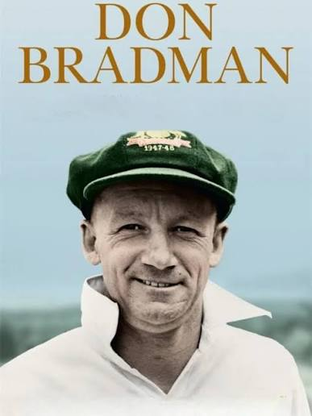
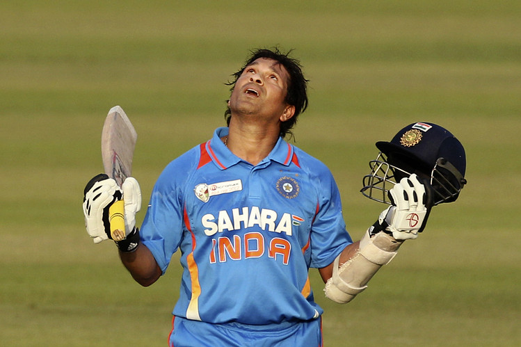
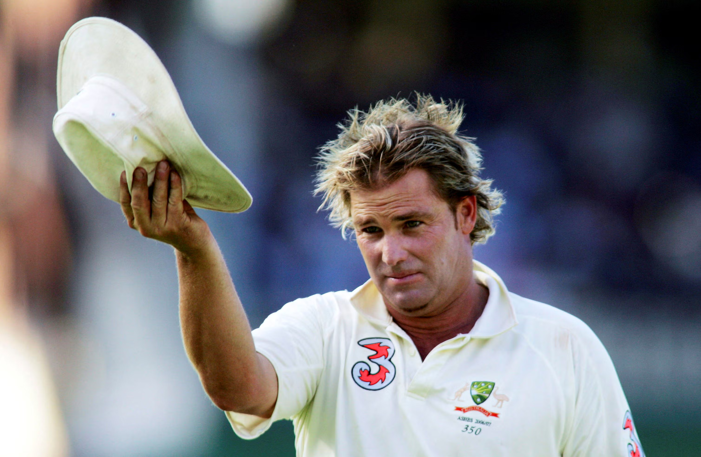
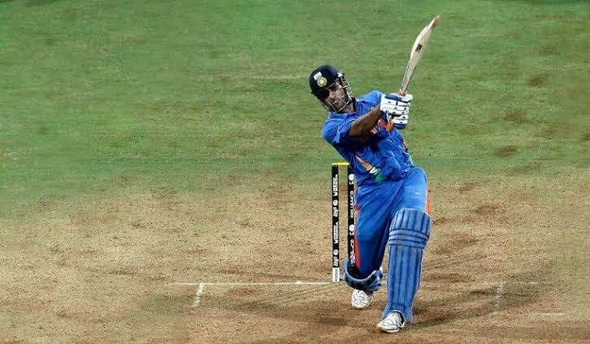

ABOUT THE MUSEUM
Our Journey Through
Cricket History
Discover the story behind our museum and our mission to preserve the rich heritage of cricket for generations to come.
WHO WE ARE
Celebrating Cricket's Timeless Legacy
The Cricket Heritage Museum & Hall of Fame was established to preserve the unforgettable moments, legendary players, and priceless memorabilia that define the history of cricket. Our museum offers visitors an immersive journey through the evolution of the sport, from its early beginnings in England to today's global championships.
Every gallery reflects the passion, dedication, and spirit that have made cricket one of the world's most beloved games.
OUR FOUNDATION
Our Mission
To preserve cricket's history through authentic artifacts, interactive exhibits, and educational experiences that inspire visitors of all ages.
Our Vision
To become one of the world's leading cricket museums, connecting generations through the stories and achievements of the game.
Our Values
To preserve cricket history for future generations, educates visitors about how the sport developed,celebrates famous players.
Cricket Legends Who Inspired the World

Sir Donald Bradman
Australia
"The greatest Test batter in cricket
history."

Sachin Tendulkar
India
"The highest run-scorer in international cricket."

Shane Warne
Australia
"One of the greatest leg-spin bowlers of all time."

MS Dhoni
India
"World Cup-winning captain known for calm leadership."